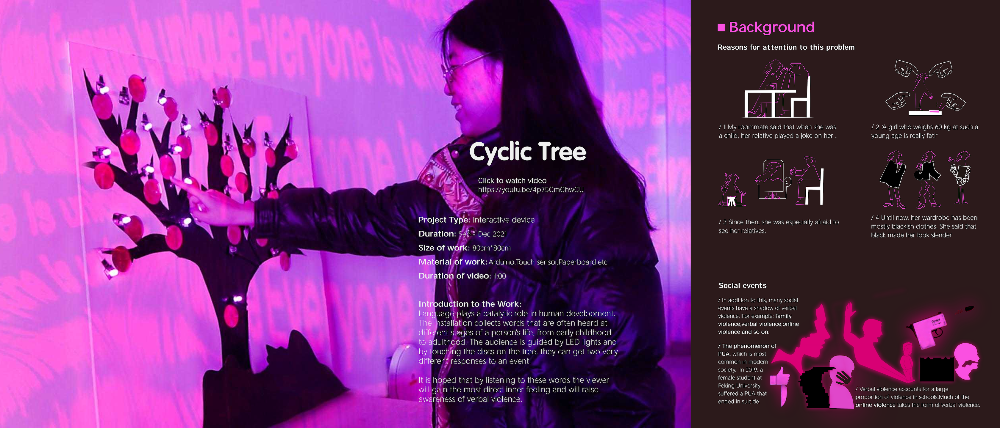
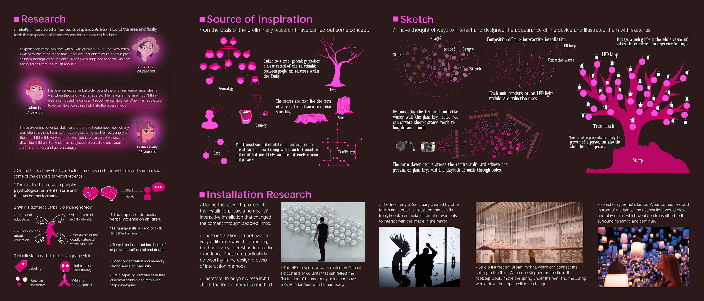
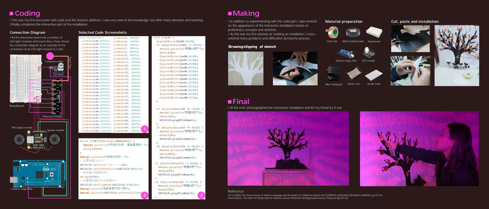

Interactive Installation · Physical Computing · 2021
Cyclic Tree
Cyclic Tree is a touch-responsive installation exploring how verbal violence can influence personal development from childhood to adulthood. Touch-sensitive discs embedded in a tree-shaped interface trigger sequences of LED light and recorded words, translating an often invisible psychological experience into a direct audiovisual encounter.
Watch Project Video

